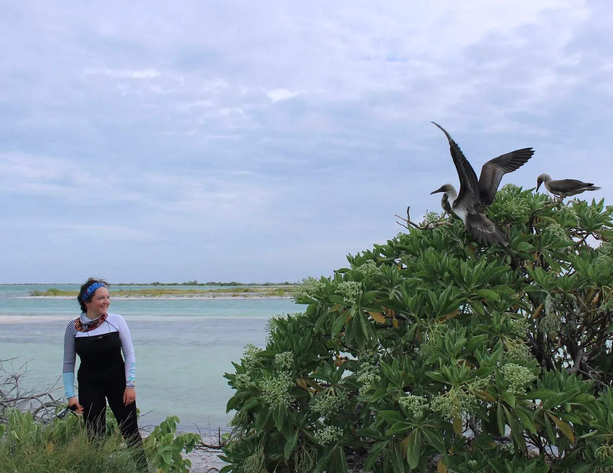
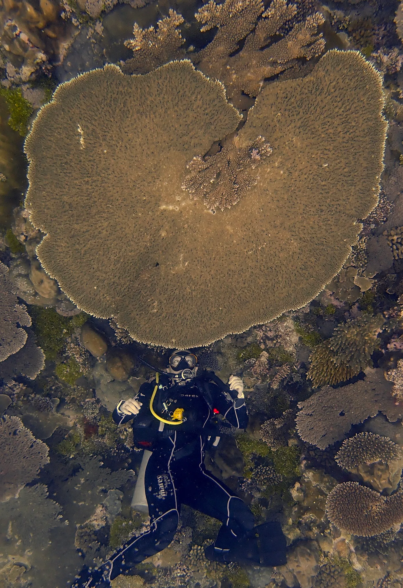
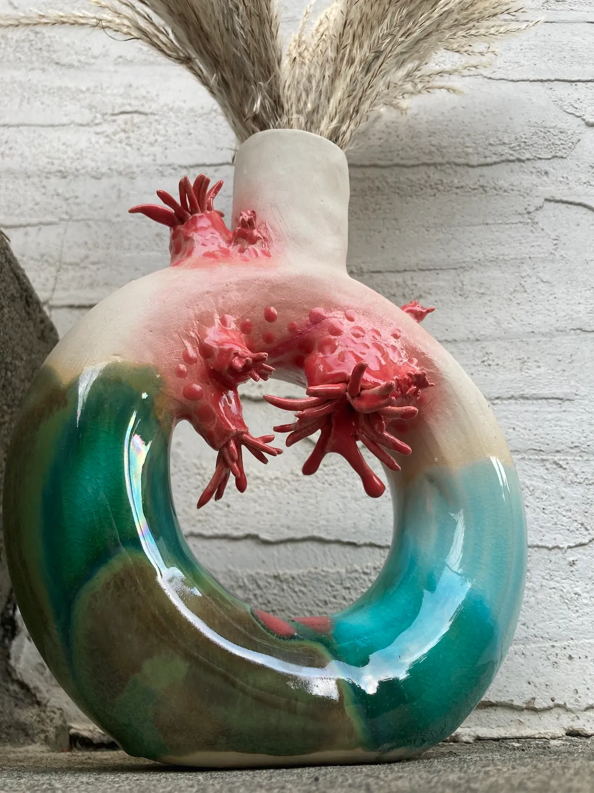
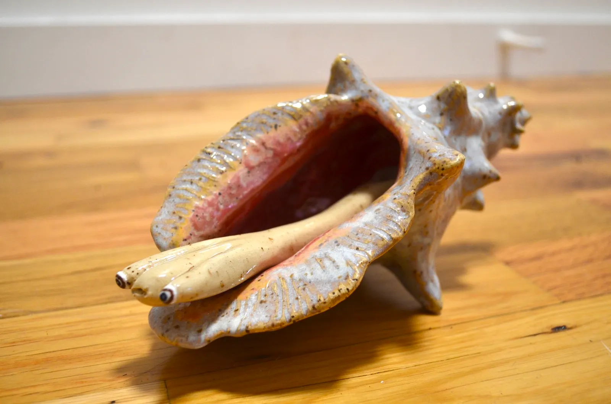
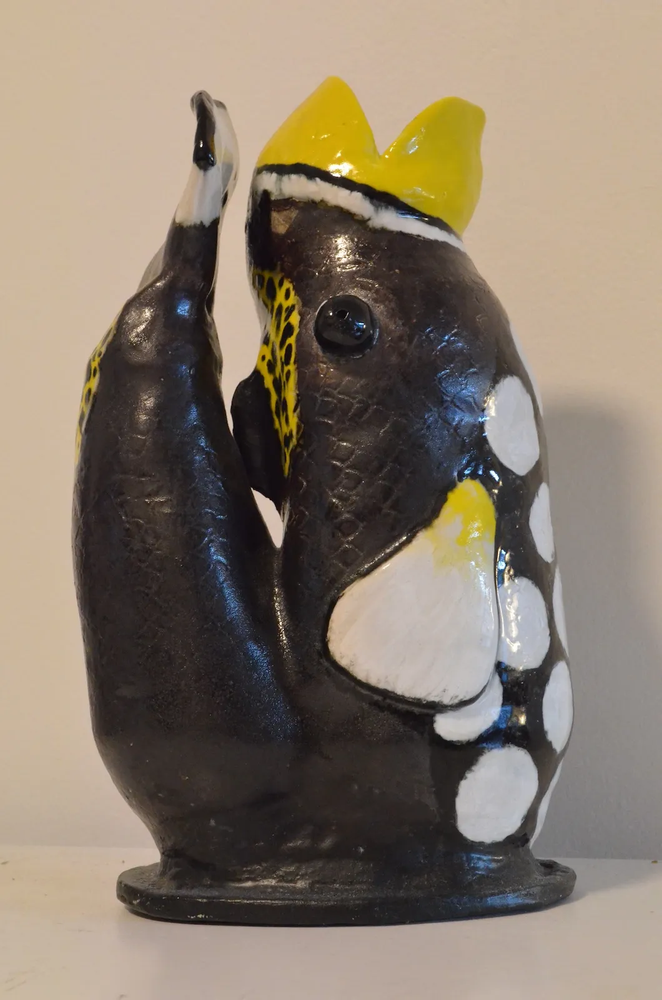
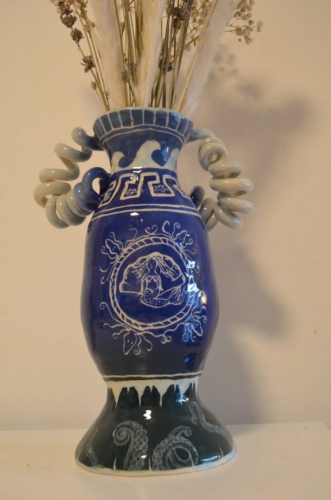
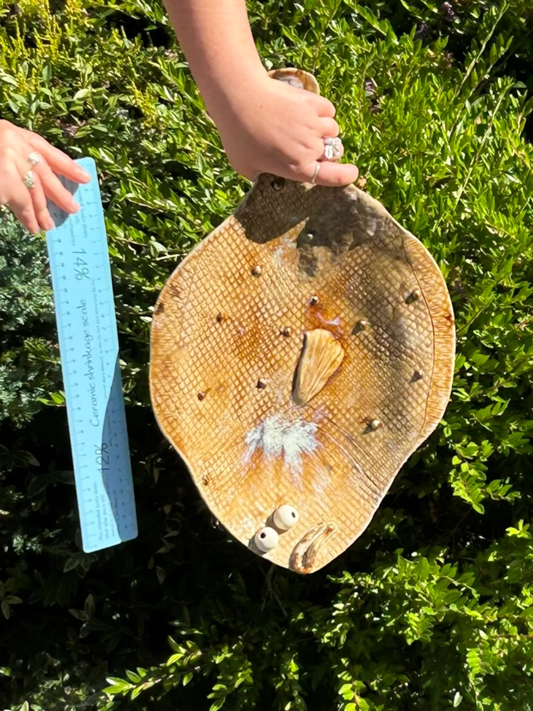
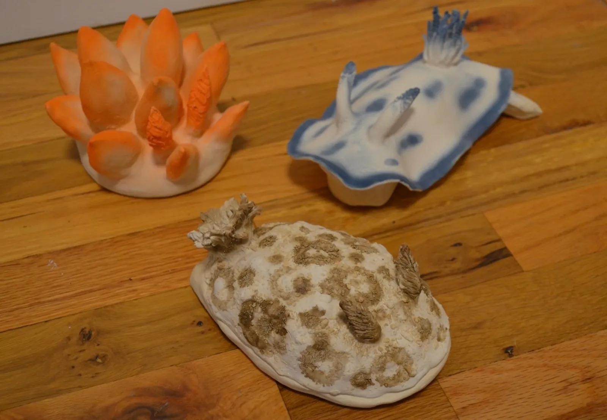
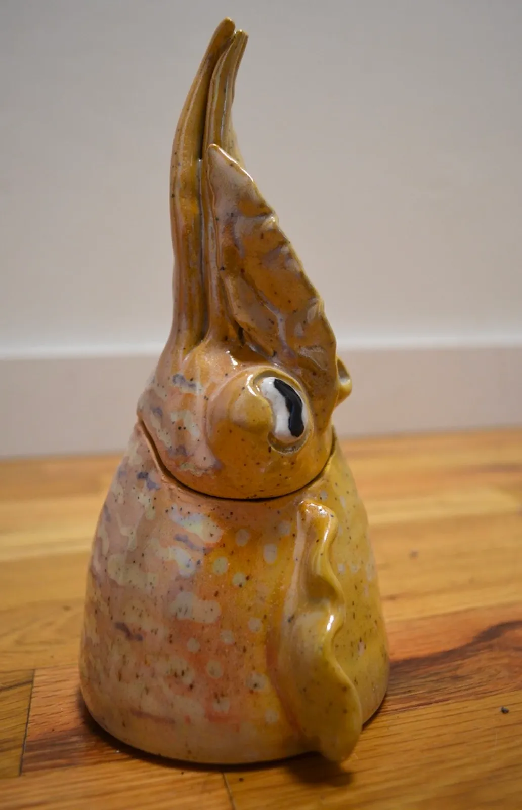
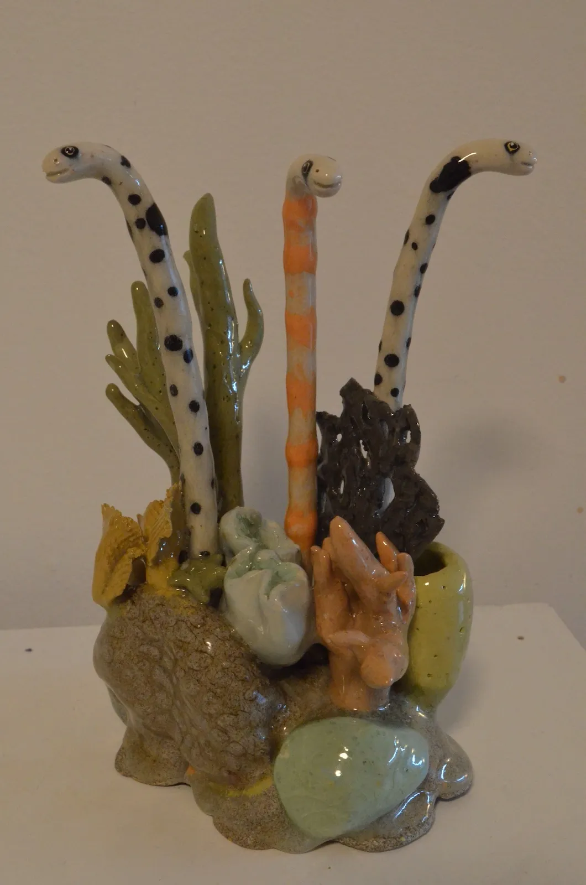

During my PhD (University of Victoria, Canada) I investigated how climate change is affecting the relationships between tropical corals and the microscopic algae that live inside them- a fragile partnership that is crucial to the survival of coral reefs this century. This demanded a breadth of technical skills, from planning experiments and expeditions to conducting underwater fieldwork, sequencing DNA and coding.
Yet generating novel and compelling research was a far more creative process than I had anticipated. I especially relished opportunities to hone my writing and presentation skills, engaging both academic and public audiences.
© E. Woodburn

© L. Lachs
I learned to dive in a murky reservoir next to the UK’s busiest motorway- a glimpse of a fish between abandoned shopping trolleys was enough for me to become hooked. Through scuba diving, I became fascinated with the vibrant yet alien world of coral reefs.
I got a taste for research during my undergraduate degree (University of Oxford, UK), uncovering insidious drivers of female aggression in fruit flies. I then completed a masters (University of Miami, USA) trialling methods for increasing corals’ tolerance to high temperatures, before continuing with a PhD.
I believe the best collaborations are built on empathy, curiosity, lateral thinking and a sense of humour, and I strive to ensure everyone, regardless of seniority, feels valued and respected.
I’m committed to mentorship and to creating opportunities that support the advancement of women in STEM. I’m driven by the belief that the most successful conservation is achieved in partnership with local communities, not simply carried out within them.
Selected work
Featured Projects
Research, storytelling and public engagement projects that bring the hidden stories of the natural world into view.
Featured project stories coming next.
What I do
Skills & Experience
Field research, scientific diving, molecular biology, data analysis and creative science communication.
Skills, fieldwork map and dive counter coming next.
I've been fortunate to encounter some of the ocean's most fascinating creatures and ecosystems. I love sharing these moments through photography, videography and even ceramics.








CV
A concise overview of my research, communication, fieldwork and creative experience.